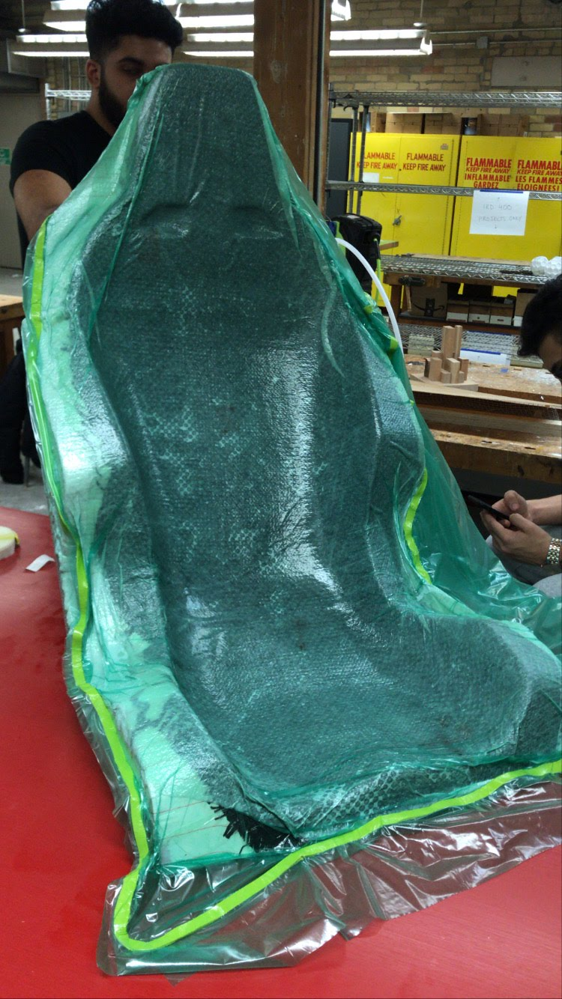
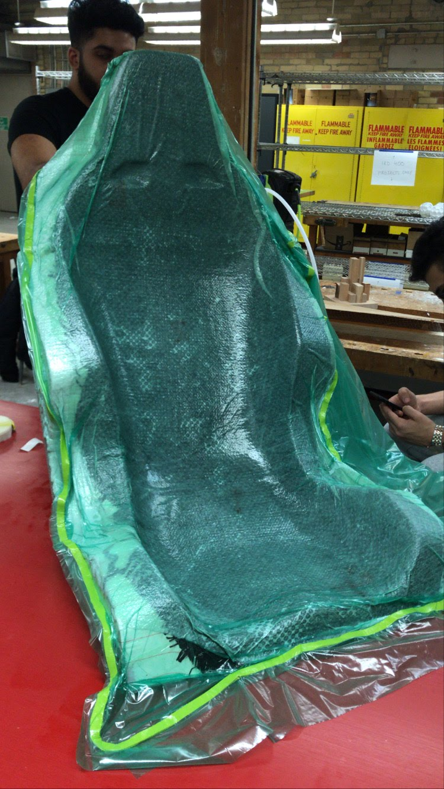

Overview
Helium was a student-led design team I co-founded at university, focused on developing an electric vertical takeoff and landing (EVTOL) aircraft for the GoFly competition in California. I led the UX and cockpit design team, where we created the user controls, center console, and seating arrangements. I also took an active role in the manufacturing process, using composite layups and CNC tooling to help bring our full-scale vehicle to life on an aggressive timeline.
Technical Challenges
- Timelines: Balancing academics with project deadlines required strong planning and weekly alignment meetings. We completed a full-scale vehicle in two months.
- Cost/Budget: We secured funding through grants and university connections. This supported the build of a small-scale, half-scale, and full-scale drone, as well as travel to California.
- Space: I helped secure a large campus makerspace. We efficiently managed work across four build areas.
- Build Process: We used assembly lines, learned composite layups, and operated CNC machines to fabricate custom foam components.
Design & Testing Methodologies
We applied foundational design techniques such as component embodiments, user personas, CAD modeling, and simulation. Constraints limited us to full-system testing, which became a core part of our evaluation.
Tools used: Fusion 360, Excel/VBA, Hand tools, CNC machines, Composite layups, 3D printing
Solutions and Results
- Timelines: Our disciplined planning enabled us to deliver the final vehicle in two months.
- Funding: Strategic grant applications and partnerships funded materials and travel.
- Space: Utilizing four workspaces forced us to optimize every inch of build area.
- Manufacturing: We scaled our learning curve through mentor guidance, efficient assembly line setups, and use of digital fabrication tools.
Reflection
This experience taught me how to lead a multidisciplinary team, manage rapid prototyping, and build functional aerospace-grade systems under real-world constraints. It deepened my passion for hands-on engineering and led to my long-term goal: establishing a fabrication shop to help early-stage design teams prototype and manufacture effectively.